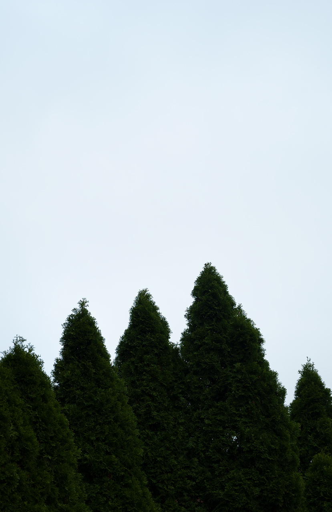

It does not have to be far,
or to any certain tree.
This walk is to learn
or find your new favorite tree.
It does not have to be far,
or to any certain tree.
This walk is to learn,
or find your new favorite place to be.
The University of Connecticut Arboretum Committee maintains an inventory count of over 4,500 trees on the UConn - Storrs campus. Some of the most commonly tagged native spiecies include the Zumi Crabapple and the Sugar Maple, with over 204 and 155 trees, respectively. On this site, you may virtually explore the notable trees on the this collection based of the UConn Arboretum's Campus Tree Touring Guide.
In this Tree Map, you may fly tree to tree to discover unique characteristics of each species, along with seasonal photos and a narrative to why the Arboretum Committee has flagged it as notable.
Go to the Tree Map >
